PaaS 실습
— 같은 MSA 앱을, 4가지 방식으로 반복 배포하기
1강에서 배운 MSA·Container·DevOps·CI/CD가 실제로 어떻게 손에 잡히는지, 같은 목표(MSA 게시판·MSA 샘플 앱 배포)를 서로 다른 4가지 방식으로 반복 실습하며 확인합니다.
이 실습을 보는 순서 — 같은 목표, 4가지 방식
- 직접 관리 (kubectl) — 인프라(Redis/MySQL), 빌드(WAR→Docker 이미지), 배포(yaml→kubectl apply)를 전부 손으로 수행
- 포털 GUI — 같은 YAML을 K-PaaS Container Platform 포털 화면에 붙여넣어 배포, 파이프라인으로 빌드~배포 자동 연결 체험
- 완전 자동화 — 포털의 ConfigMap + 소스컨트롤 + 파이프라인을 엮어 4개 마이크로서비스를 사람이 kubectl을 한 줄도 안 치고 배포
- 기본기 재확인 — 위 세 방식이 결국 무엇을 대신해줬는지, kubectl 기본 명령어로 되짚기
| 구분 | Part Ⅰ · kubectl 직접 | Part Ⅱ · 포털 GUI | Part Ⅲ · 소스컨트롤+파이프라인 |
|---|---|---|---|
| 리소스 배포 | vim으로 yaml 직접 수정 → kubectl apply | 포털 Workloads/Services 메뉴에 YAML 붙여넣기 | 파이프라인 Deploy 작업이 YAML을 자동 적용 |
| 이미지 생성 | 로컬 Eclipse+Maven으로 WAR 빌드 → Dockerfile → docker build/push 수작업 | 파이프라인 Build 작업이 Docker File을 자동 생성해 이미지 빌드(spring-music 예제, u2-2) | 파이프라인이 Git 커밋을 받아 Docker File 자동 생성 후 빌드 |
| 자동화 정도 | 없음 — 매번 사람이 명령 실행 | 부분적 — 파이프라인 작업 체인은 있으나 소스 저장소는 별도 관리 | 높음 — 저장소 커밋 → 빌드 → 정적분석/테스트 → 배포까지 트리거로 연결 |
| 확인 방법 | kubectl get/describe로 직접 조회 | 포털에서 리소스 목록 화면 제공 | 포털 리소스 화면 + 파이프라인 실행 로그 |
| 대응하는 1강 개념 | Container, kubectl 기초 | PaaS(플랫폼이 관리 계층 대신 수행) | DevOps, CI/CD 파이프라인 |
MSA 게시판 애플리케이션 배포 — Kubernetes로 직접 구성하기
회원가입·게시판·댓글 기능을 가진 게시판 애플리케이션을, UI/API Gateway/API 3종/DB 3종/세션 저장소로 쪼갠 MSA 구조로 직접 배포합니다. 인프라 준비부터 이미지 빌드, 최종 배포까지 전 과정을 손으로 진행합니다.
이번 7강 전체는 "같은 게시판 앱을 배포한다"는 하나의 목표를, 4가지 다른 방법으로 반복하는 실습입니다. 같은 목적지에 가는 방법에 비유하면, Part Ⅰ은 직접 운전(모든 걸 손으로 하는 kubectl), Part Ⅱ는 내비게이션이 달린 차(포털 화면 클릭), Part Ⅲ은 자율주행(설정만 해두면 알아서 달리는 파이프라인), Part Ⅳ는 다시 운전을 배우며 원리를 복습하는 것에 가깝습니다. 도착지(결과물)는 같아도 사람이 손을 얼마나 대는지가 다릅니다.
01 · 실습 목표와 아키텍처 이해
이번 실습의 결과물은 회원가입, 로그인, 게시글 작성, 댓글 작성이 되는 게시판 애플리케이션입니다. 이 하나의 서비스가 내부적으로는 9개의 독립된 쿠버네티스 리소스로 쪼개져 있습니다 — 화면(UI), API Gateway, 3개의 API(사용자/게시글/댓글), 각 API 전용 DB 3개, 그리고 세션 저장을 위한 Redis. 1강에서 배운 "느슨결합 분산(MSA)"과 "서비스별 독립 DB"가 실제 슬라이드에 그대로 등장합니다.
| 구성요소 | 리소스 이름 | 역할(원본 문구) |
|---|---|---|
| 화면(UI) | edu-msa-ui | 화면 서비스를 담당하는 API |
| API Gateway | edu-msa-zuul | API 서버 앞단에서 여러 API 서버들의 End-Point를 단일화하여 라우팅, 로드밸런싱 등의 역할을 하는 API |
| 게시글 API | edu-msa-board | 게시글 서비스를 담당하는 API |
| 댓글 API | edu-msa-comment | 댓글 서비스를 담당하는 API |
| 사용자 API | edu-msa-user | 사용자 정보에 대한 서비스를 담당하는 API |
| 세션 저장소 | redis-msa-ui | 레디스를 이용해 세션값을 저장하는 역할 |
| DB (게시글) | mysql-msa-board | 게시글 API 전용 DB |
| DB (댓글) | mysql-msa-comment | 댓글 API 전용 DB |
| DB (사용자) | mysql-msa-user | 사용자 API 전용 DB |
원본 부연 설명: "서비스별 별도의 데이터베이스를 분리하여 각 서비스의 데이터를 독립적으로 운영."
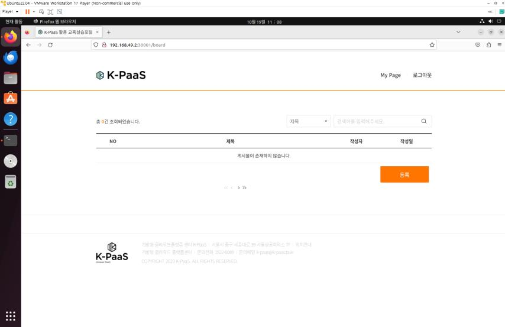
모놀리식 구조라면 댓글 기능 하나만 고쳐도 애플리케이션 전체를 다시 빌드·배포해야 합니다. 서비스 단위로 쪼개면 댓글 기능을 고칠 때 edu-msa-comment 하나만 다시 빌드·배포하면 됩니다. DB를 서비스별로 3개 나눈 것도 같은 이유입니다 — 각 서비스가 자기 데이터를 독립적으로 소유해야 서비스 간 결합도가 낮아집니다.
사용자 관점에서는 "로그인 → 글쓰기 → 댓글달기"라는 하나의 흐름이지만, 내부적으로는 사용자API·게시글API·댓글API가 REST API로 통신하고 API Gateway(zuul)가 외부 요청의 단일 진입점 역할을 합니다. 1강에서 다룬 "주문하기" MSA 예시(사용자관리/상품관리/주문관리)와 동일한 패턴입니다.
한 명의 요리사가 접수부터 조리, 서빙까지 모두 맡는 식당과, 접수·조리·서빙 담당이 각자 따로 일하는 식당을 비교해보면 이해가 쉽습니다. MSA는 후자입니다 — 조리 담당(게시글 API)이 바빠서 잠깐 멈춰도 접수(사용자 API)와 서빙(댓글 API)은 계속 돌아갑니다. 대신 담당자(서비스)끼리 정확히 소통해야 하니, 그 소통 창구 역할을 API Gateway가 맡습니다.
02 · 배포 준비 — 소스 다운로드 & 포트 매핑 규칙
실습에 필요한 모든 쿠버네티스 배포 설정(yaml) 파일은 GitHub 저장소 하나에 모여 있습니다. 이를 클론한 뒤, 9개 리소스가 쓸 NodePort 번호를 미리 정해둔 표를 확인합니다.
이 코드가 하는 일을 한 줄로 요약하면: 실습에 쓸 배포 설정 파일들이 모여 있는 GitHub 저장소를 내 서버로 통째로 내려받는(clone) 명령입니다.
# 저장소 클론
$ cd ~
$ git clone https://github.com/K-PaaS/edu-msa-file.git예시 화면 · 참고용 객체 수·전송 속도 등 실제 출력 값은 저장소 크기와 네트워크 환경마다 다르며, 이 화면은 git clone 명령의 일반적인 출력 형태를 보여주기 위한 예시다.
| 애플리케이션 | 변수 | 포트번호 |
|---|---|---|
| edu-msa-ui | ${EDU_MSA_UI} | 30001 |
| edu-msa-zuul | ${EDU_MSA_ZUUL} | 30101 |
| edu-msa-board | ${EDU_MSA_BOARD} | 30201 |
| edu-msa-comment | ${EDU_MSA_COMMENT} | 30301 |
| edu-msa-user | ${EDU_MSA_USER} | 30401 |
| mysql-msa-board | ${MYSQL_MSA_BOARD} | 30501 |
| mysql-msa-comment | ${MYSQL_MSA_COMMENT} | 30601 |
| mysql-msa-user | ${MYSQL_MSA_USER} | 30701 |
| redis-msa-ui | ${REDIS_MSA_UI} | 30801 |
활용 예시(원문): "MYSQL_MSA_BOARD의 포트번호가 필요한 경우 테이블을 참고하여 ${MYSQL_MSA_BOARD} 변수에 해당하는 포트번호인 '30501'을 입력한다."
MSA는 리소스 수가 많아서(이번 실습만 9개) 포트가 겹치면 배포가 충돌합니다. 표로 고정해두면 이후 여러 yaml 파일을 수정할 때 값을 일관되게 넣을 수 있습니다.
이 표의 변수들은 이후 모든 yaml 수정 단계(u1-3, u1-5, u1-7)에서 반복적으로 등장하므로, 이 단계에서 표를 한 번 정리해두면 뒤에서 헤매지 않습니다.
03 · 상태 저장소 배포 — Redis(세션) & MySQL(DB 3종)
게시판 앱은 로그인 세션을 Redis에, 게시글·댓글·사용자 데이터를 MySQL 3개 DB에 저장합니다. 1강의 12 Factor App 원칙 중 "무상태(Stateless) 프로세스"에 따라, 애플리케이션 자신은 상태를 갖지 않고 상태는 전부 외부 저장소(Redis/MySQL)로 분리되어 있습니다.
-
Redis 배포
이 코드가 하는 일을 한 줄로 요약하면: 세션 저장소로 쓸 Redis의 접속 포트를 표에서 정한 값(30801)으로 고쳐서 배포하는 것입니다.
$ vim ~/edu-msa-file/Kubernetes/redis-msa-ui.yaml # ${REDIS_MSA_UI} 를 "30801"로 수정 $ cd ~/edu-msa-file/Kubernetes/ $ kubectl apply -f redis-msa-ui.yaml -
MySQL 배포 (board/comment/user)
이 코드가 하는 일을 한 줄로 요약하면: 게시글·댓글·사용자용 DB 3개의 접속 포트를 각각 고쳐서 한 번에 배포하는 것입니다.
# ${MYSQL_MSA_BOARD} → 30501, ${MYSQL_MSA_COMMENT} → 30601, ${MYSQL_MSA_USER} → 30701 $ vim ~/edu-msa-file/Kubernetes/mysql-msa-board.yaml $ vim ~/edu-msa-file/Kubernetes/mysql-msa-comment.yaml $ vim ~/edu-msa-file/Kubernetes/mysql-msa-user.yaml $ cd ~/edu-msa-file/Kubernetes/ $ kubectl apply -f mysql-msa-board.yaml -f mysql-msa-comment.yaml -f mysql-msa-user.yaml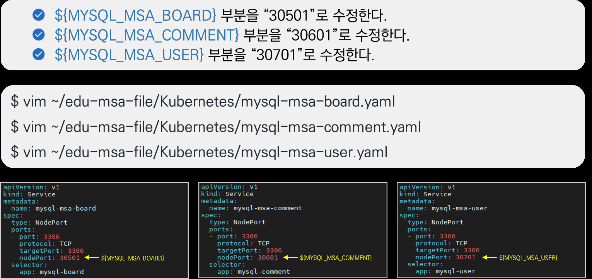
mysql-msa-board / -comment / -user 3개 서비스 yaml에서 NodePort 변수를 포트번호 테이블 값(30501/30601/30701)으로 각각 치환한다. -
DB 접속 & 테이블 생성 (board 예시, comment/user도 동일 패턴)
이 코드가 하는 일을 한 줄로 요약하면: 방금 띄운 MySQL 컨테이너 안에 직접 접속해서, 게시판 데이터를 저장할 데이터베이스와 표(테이블)를 만드는 것입니다.
$ kubectl get pods $ kubectl exec -it ${POD_NAME} -- /bin/bash # 예시: kubectl exec -it mysql-msa-board-7d86858bcb-bkg5j -- /bin/bash # mysql -u root -p Enter password: password CREATE DATABASE msa_board default CHARACTER SET UTF8; CREATE TABLE `TB_BOARD` ( `board_seq` int(11) NOT NULL AUTO_INCREMENT, `board_title` varchar(50) COLLATE utf8_unicode_ci NOT NULL, `board_text` mediumtext COLLATE utf8_unicode_ci, `write_user_id` varchar(20) COLLATE utf8_unicode_ci NOT NULL, `write_user_name` varchar(20) COLLATE utf8_unicode_ci NOT NULL, `use_yn` varchar(1) COLLATE utf8_unicode_ci DEFAULT 'Y', `create_dt` datetime NOT NULL, `update_dt` datetime NOT NULL, PRIMARY KEY (`board_seq`) ) ENGINE=InnoDB AUTO_INCREMENT=1 DEFAULT CHARSET=utf8 COLLATE=utf8_unicode_ci; USE msa_board; > exit # exit$ kubectl get pods NAME READY STATUS RESTARTS AGE mysql-msa-board-7d86858bcb-bkg5j 1/1 Running 0 2m10s mysql-msa-comment-6f7cd65b8d-9jwrb 1/1 Running 0 2m10s mysql-msa-user-788b778c6d-4tbwm 1/1 Running 0 2m10s redis-msa-ui-xxxxxxxxxx-xxxxx 1/1 Running 0 3m41s예시 화면 · 참고용 pod 이름 뒤의 무작위 문자열(해시)은 배포할 때마다 달라진다 — 이 pod 이름들은 원본 자료에도 "예시"로 표기되어 있으며, 실제 접속 시에는 내 환경의
kubectl get pods결과에 나온 이름을 그대로 써야 한다.comment/user DB도 DB명·테이블명만 바꿔 동일한 패턴으로 생성합니다:
CREATE DATABASE msa_comment+TB_COMMENT(comment_seq, board_seq, comment 등),CREATE DATABASE msa_user+TB_USER(user_seq, user_id, user_passwd 등,UNIQUE KEY id_key(user_id)).
u1-1에서 설명한 MSA의 "서비스별 독립 데이터 소유" 원칙의 실제 구현입니다. 게시글 DB에 장애가 나도 사용자 DB·댓글 DB는 영향받지 않습니다.
kubectl exec로 실행 중인 MySQL 파드 내부 셸에 접속 → mysql 클라이언트로 로그인 → CREATE DATABASE/CREATE TABLE DDL을 실행합니다. 이 과정은 애플리케이션 코드가 자동으로 하는 게 아니라 사람이 배포 직후 1회성으로 실행하는 초기화 작업입니다(1강 12 Factor App의 "관리 프로세스는 일회성 프로세스로 실행" 원칙에 해당).
"애플리케이션은 무상태(기억을 못하는 직원)이고, 상태(기억)는 Redis·MySQL이라는 별도의 캐비닛에 보관한다"는 뜻입니다. 직원(API 서버)이 잠깐 자리를 비우거나 새 직원으로 교체되어도, 캐비닛(DB)에 적힌 내용은 그대로 남아있기 때문에 손님(사용자)은 불편을 느끼지 않습니다.
MySQL 로그인 비밀번호는 실습 환경 기본값(password)이며, 실제 운영 환경에서는 반드시 변경해야 합니다.
04 · 로컬 빌드환경 구성 — JDK 8 & eGovFrameDev
WAR 파일을 빌드하려면 Windows PC에 JDK 8과 전자정부표준프레임워크 개발환경(eGovFrameDev, Eclipse 기반 배포판)이 필요합니다.
# 환경 변수 등록
제어판 → 시스템 → 고급 시스템 설정 → 환경 변수 → 새로 만들기(시스템 변수)
변수 이름: JAVA_HOME 변수 값: C:\Program Files\Java\ (하위 폴더에 jdk1.8)
변수 이름: CLASSPATH 변수 값: %JAVA_HOME%\lib
Path 편집 → 새로 만들기 → %JAVA_HOME%\bin 추가
$ java -version
$ javac -version
# CMD 창에서 JDK가 정상 설치되었는지 확인
# eGovFrameDev-3.9.0-64bit.exe 다운로드 → 압축 해제 → eclipse.exe 실행원본에 "war 파일 생성 시 반드시 jdk 8버전으로 빌드를 실행해야 한다"고 명시되어 있습니다. 전자정부프레임워크 3.9.0 기반 프로젝트의 호환성 요구사항이기 때문입니다.
eGovFrameDev는 전자정부표준프레임워크 기반 Eclipse 배포판으로, 한국 공공기관 SW 개발에서 널리 쓰이는 개발 도구입니다.
05 · 소스 설정 반영 & WAR 빌드
GitHub에서 받은 5개 API 소스(edu-msa-ui / zuul / user / comment / board)를 Eclipse 프로젝트로 불러온 뒤, 각 프로젝트의 api.properties 파일에 실제 접속 정보(네임스페이스, Minikube IP, 포트)를 채워 넣고 Maven으로 WAR 파일을 만듭니다.
-
소스 다운로드
GitHub URL:
https://github.com/K-PaaS?q=edu&type=all에서 'edu-msa'로 검색하여 5개 저장소(edu-msa-ui, edu-msa-zuul, edu-msa-user, edu-msa-comment, edu-msa-board)를 다운로드합니다(Clone 또는 Download Zip, 압축파일은 해제).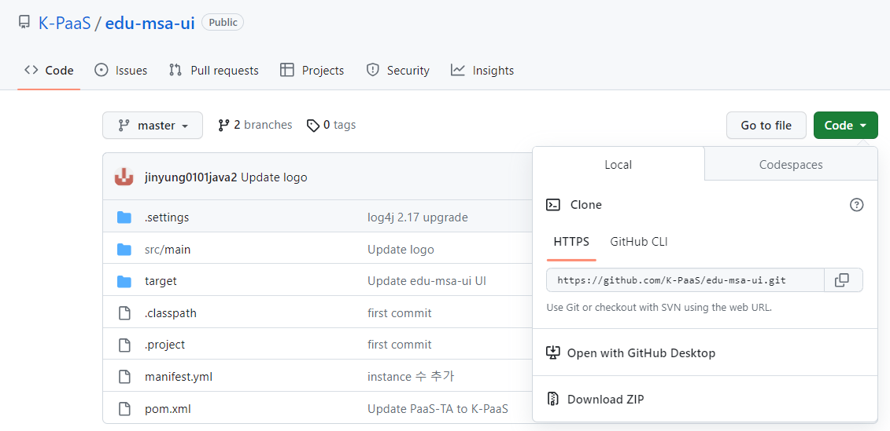
K-PaaS GitHub 조직에서 API 소스(edu-msa-ui 등 5개 저장소)를 다운로드하는 화면. -
Eclipse 프로젝트 추가
File → Open Projects from File System → Directory → 소스파일 선택 → Finish -
(board/comment/user) 설정파일 수정
경로: 프로젝트/src/main/resources/properties/api.properties
① ${NAMESPACE} → "default" ② ${KUBERNETES_URL} → Minikube IP 주소 ③ ${MYSQL_MSA_BOARD}=30501, ${MYSQL_MSA_COMMENT}=30601, ${MYSQL_MSA_USER}=30701 -
(ui) 설정파일 수정
① ${NAMESPACE} → "default" ② ${KUBERNETES_URL} → Minikube IP 주소 ③ ${REDIS_MSA_UI} → 30801 -
(zuul) 설정파일 수정 없음
K8S 배포 시 yaml 파일에서 변수 적용하므로 수정 없이 바로 war 파일을 생성합니다.
-
Maven build JDK 등록
Window → Preferences → Java → Installed JREs → 기존 목록 선택 → Remove → Add → Standard VM → Next → Directory → jdk-1.8 폴더 선택 → Finish → 목록에서 jdk 선택 → Apply and Close -
WAR 빌드 (5개 프로젝트 각각)
프로젝트 우클릭 → Run As → Maven build... Goals: clean install → Run # 빌드 완료 시 각 프로젝트의 target/ 폴더에 war 파일 생성 -
war 파일 서버 이동
MobaXterm sftp로 드래그: 로컬
target/*.war→ 서버/edu-msa-file/Docker/edu-msa-*/각 폴더.
api.properties에 들어가는 접속 정보(DB 포트, Redis 포트, K8s 네임스페이스)가 실제 배포 환경 값과 일치해야 서비스 간 통신이 정상 동작합니다. Zuul(API Gateway)만 예외로 소스 수정이 없는 이유는, 라우팅 대상 정보를 코드가 아니라 배포 시점의 yaml(환경변수)로 주입하기 때문입니다 — 이는 1강 12 Factor App의 "설정(Config)은 코드가 아니라 환경에 저장한다" 원칙이 실제로 나뉘어 적용된 사례입니다.
WAR는 아직 "컨테이너 이미지"가 아니라 자바 웹 애플리케이션 패키지일 뿐입니다. 다음 단계(u1-6)에서 Dockerfile이 이 WAR를 Tomcat 베이스 이미지 위에 얹어야 비로소 실행 가능한 컨테이너 이미지가 됩니다.
war 파일은 반드시 JDK 8로 빌드해야 하며, 다른 버전으로 빌드하면 배포 후 정상 동작하지 않을 수 있습니다. 이미지 생성 전에는 Dockerfile 위치에 war 파일과 server.xml(board/comment/ui/user) 또는 application.yml(zuul)이 같은 폴더에 있는지 반드시 확인해야 합니다.
06 · Docker 이미지 빌드·태그·푸시 (Docker Hub)
WAR 파일과 설정파일(server.xml/application.yml)이 Dockerfile과 같은 폴더에 준비된 상태에서, docker build로 이미지를 만들고 Docker Hub 저장소에 업로드합니다. Docker Hub는 원문 정의상 "도커에서 운영하는 도커 이미지 저장소 서비스"입니다.
-
Docker Hub 계정 생성 및 저장소 생성
https://hub.docker.com/에서 계정을 만들고, edu-msa-board / edu-msa-comment / edu-msa-ui / edu-msa-user / edu-msa-zuul 5개 이미지 저장소(Repository)를 각각 생성합니다. -
저장소 로그인
$ docker login docker.io -
이미지 빌드 · 태그 · 업로드 (5개 서비스 반복)
이 코드가 하는 일을 한 줄로 요약하면: 5개 서비스 각각을 컨테이너 이미지로 포장(build)하고, 내 Docker Hub 계정 이름표를 붙여(tag) 창고에 업로드(push)하는 것입니다.
$ cd ~/edu-msa-file/Docker/edu-msa-board/ $ docker build --tag edu-msa-board:latest . $ docker tag edu-msa-board ${도커허브ID}/edu-msa-board $ docker push ${도커허브ID}/edu-msa-board $ cd ~/edu-msa-file/Docker/edu-msa-comment/ $ docker build --tag edu-msa-comment:latest . $ docker tag edu-msa-comment ${도커허브ID}/edu-msa-comment $ docker push ${도커허브ID}/edu-msa-comment $ cd ~/edu-msa-file/Docker/edu-msa-ui/ $ docker build --tag edu-msa-ui:latest . $ docker tag edu-msa-ui ${도커허브ID}/edu-msa-ui $ docker push ${도커허브ID}/edu-msa-ui $ cd ~/edu-msa-file/Docker/edu-msa-user/ $ docker build --tag edu-msa-user:latest . $ docker tag edu-msa-user ${도커허브ID}/edu-msa-user $ docker push ${도커허브ID}/edu-msa-user $ cd ~/edu-msa-file/Docker/edu-msa-zuul/ $ docker build --tag edu-msa-zuul:latest . $ docker tag edu-msa-zuul ${도커허브ID}/edu-msa-zuul $ docker push ${도커허브ID}/edu-msa-zuul$ docker build --tag edu-msa-board:latest . ... Successfully built 1a2b3c4d5e6f Successfully tagged edu-msa-board:latest예시 화면 · 참고용 실제 출력 값(이미지 해시 등)은 빌드할 때마다 다르며, 이 화면은 docker build 명령의 일반적인 출력 형태를 보여주기 위한 예시다. 나머지 4개 서비스(comment/ui/user/zuul)도 이미지 이름만 바뀔 뿐 같은 형태로 출력된다.
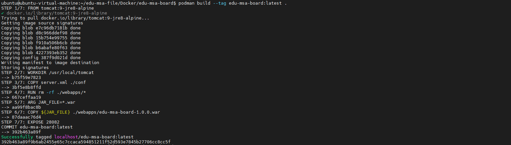
edu-msa-board 이미지 빌드 로그 — Tomcat 베이스 이미지(tomcat:9-jre8-alpine) 위에 server.xml과 WAR 파일을 올려 이미지를 완성한다.
Kubernetes 클러스터의 노드가 이미지를 pull 받으려면 접근 가능한 공용 레지스트리(Docker Hub)에 이미지가 있어야 합니다. 로컬에서만 build한 이미지는 그 컴퓨터에만 존재하므로, 계정 네임스페이스를 붙여 태그(tag)한 뒤 push하는 과정이 필요합니다.
이미지를 빌드하는 것은 물건을 상자에 포장하는 것이고, Docker Hub는 택배 보관 창고입니다. 내 컴퓨터에서만 포장한 상자는 그 컴퓨터에만 있으므로, 창고(Docker Hub)에 갖다 놓아야(push) 다른 곳(Kubernetes 클러스터의 서버들)에서도 그 창고 주소로 상자를 받아갈(pull) 수 있습니다.
이 build → tag → push 패턴은 5개 서비스(board, comment, ui, user, zuul) 모두에 동일하게 반복됩니다.
07 · Kubernetes 배포 & 접속 확인
완성된 이미지를 실제로 클러스터에 올리기 위해 각 서비스의 배포 yaml에서 image 경로와 NodePort 값을 최종 수정한 뒤 kubectl apply로 한 번에 배포하고, 웹 브라우저로 접속해 회원가입/게시판/댓글 기능이 실제로 동작하는지 확인합니다.
-
yaml 최종 수정 (board/comment/ui/user)
이 코드가 하는 일을 한 줄로 요약하면: 각 서비스의 배포 설정에 방금 업로드한 이미지 주소와 포트 번호를 채워 넣어, 실제 배포에 쓸 수 있게 최종 수정하는 것입니다.
# image: "${도커허브ID}/edu-msa-board:latest", ${EDU_MSA_BOARD} → "30201" # image: "${도커허브ID}/edu-msa-comment:latest", ${EDU_MSA_COMMENT} → "30301" # image: "${도커허브ID}/edu-msa-ui:latest", ${EDU_MSA_UI} → "30001" # image: "${도커허브ID}/edu-msa-user:latest", ${EDU_MSA_USER} → "30401" $ vim ~/edu-msa-file/Kubernetes/edu-msa-board.yaml $ vim ~/edu-msa-file/Kubernetes/edu-msa-comment.yaml $ vim ~/edu-msa-file/Kubernetes/edu-msa-ui.yaml $ vim ~/edu-msa-file/Kubernetes/edu-msa-user.yaml # yaml 수정 (zuul) — image, ${NAMESPACE} → "default", ${EDU_MSA_ZUUL} → "30101" $ vim ~/edu-msa-file/Kubernetes/edu-msa-zuul.yaml -
전체 배포
이 코드가 하는 일을 한 줄로 요약하면: 앞서 수정한 5개 서비스의 yaml 파일을 한 번에 클러스터에 적용해, 게시판 앱 전체를 실제로 띄우는 것입니다.
$ cd ~/edu-msa-file/Kubernetes/ $ kubectl apply -f edu-msa-board.yaml -f edu-msa-comment.yaml -f edu-msa-ui.yaml -f edu-msa-user.yaml -f edu-msa-zuul.yaml -
배포 확인
$ kubectl get pods $ kubectl get service$ kubectl get pods NAME READY STATUS RESTARTS AGE edu-msa-board-xxxxxxxxxx-xxxxx 1/1 Running 0 1m30s edu-msa-comment-xxxxxxxxxx-xxxxx 1/1 Running 0 1m30s edu-msa-ui-xxxxxxxxxx-xxxxx 1/1 Running 0 1m30s edu-msa-user-xxxxxxxxxx-xxxxx 1/1 Running 0 1m30s edu-msa-zuul-xxxxxxxxxx-xxxxx 1/1 Running 0 1m30s $ kubectl get service NAME TYPE CLUSTER-IP EXTERNAL-IP PORT(S) AGE edu-msa-ui NodePort 10.x.x.x <none> 8080:30001/TCP 1m30s edu-msa-zuul NodePort 10.x.x.x <none> 8080:30101/TCP 1m30s edu-msa-board NodePort 10.x.x.x <none> 8080:30201/TCP 1m30s edu-msa-comment NodePort 10.x.x.x <none> 8080:30301/TCP 1m30s edu-msa-user NodePort 10.x.x.x <none> 8080:30401/TCP 1m30s예시 화면 · 참고용 pod 이름의 해시값과 CLUSTER-IP는 배포할 때마다 달라지며, PORT(S)의 NodePort(30001, 30101 등)만 u1-2 포트번호 테이블 값과 일치하면 정상 배포된 것이다.
-
접속 확인
Master Node IP : edu-msa-ui NodePort
예시: xx.xx.xx.xx:30001/user/login
지금까지(Redis, MySQL, WAR 빌드, Docker 이미지)는 모두 이 마지막 배포를 위한 준비 단계였습니다. API들이 서로 의존하기 때문에(zuul→board/comment/user, ui→zuul/redis), 상태 저장소(Redis/MySQL)가 먼저 떠 있어야 API들이 정상 기동합니다.
이 접속 확인이 바로 u1-1에서 소개한 "실습 결과물"(회원가입, 게시판, 댓글)이 실제로 완성되는 지점입니다.
Container Platform(K-PaaS) 포털로 배포하기
이번엔 같은 개념(Deployment/Service YAML, 빌드~배포 파이프라인)을 터미널이 아니라 K-PaaS Container Platform의 웹 포털에서 다뤄봅니다.
01 · 포털에서 YAML로 직접 리소스 배포 (nginx 샘플)
K-PaaS Container Platform 포털의 Workloads > Deployments, Services > Services 메뉴에서 "생성" 버튼을 눌러 YAML을 붙여넣는 것만으로 리소스를 배포할 수 있습니다. 실습은 nginx 샘플로 진행합니다.
-
Deployment YAML 작성 (참고: kubernetes.io 공식 문서)
이 코드가 하는 일을 한 줄로 요약하면: nginx 컨테이너를 3개(replicas: 3) 띄워서 계속 유지하라고 쿠버네티스에 선언하는 배포 설정입니다.
apiVersion: apps/v1 kind: Deployment metadata: name: ssu-nginx namespace: default labels: app: nginx spec: replicas: 3 selector: matchLabels: app: nginx template: metadata: labels: app: nginx spec: containers: - name: nginx image: nginx:1.14.2 ports: - containerPort: 80 -
포털에 Deployment YAML 등록
포털: Workloads > Deployments 메뉴의 생성 버튼 클릭 > YAML 입력 > 저장.
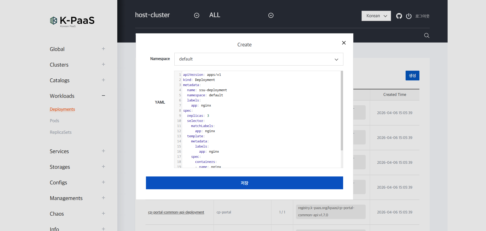
K-PaaS Container Platform 포털의 Deployment 생성 화면 — YAML을 그대로 붙여넣고 저장하면 배포된다. -
Service YAML 작성 (NodePort 타입)
이 코드가 하는 일을 한 줄로 요약하면: 앞서 만든 nginx 파드들에 접속할 수 있도록 NodePort(30110)라는 고정 창구를 열어주는 설정입니다.
apiVersion: v1 kind: Service metadata: name: ssu-nginx namespace: default spec: type: NodePort selector: app: nginx ports: - port: 80 targetPort: 80 nodePort: 30110 -
포털에 Service YAML 등록
포털: Services > Services 메뉴의 생성 버튼 클릭 > YAML 입력 > 저장.
-
배포 확인
Container Platform Portal에서 리소스를 조회합니다.
-
접속 확인
{K8S_MASTER_NODE_IP}:{NodePort}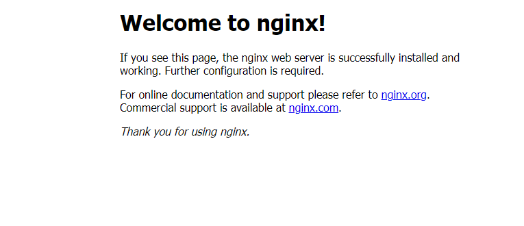
NodePort로 접속하면 뜨는 nginx 기본 페이지 — 배포 성공을 확인할 수 있다.
YAML 문법 자체는 동일합니다 — 배우는 개념(Deployment, Service, NodePort)은 Part Ⅰ과 같습니다. 달라지는 것은 "터미널 명령어" 대신 "웹 GUI"로 리소스를 관리할 수 있다는 점입니다. 이것이 PaaS 포털이 제공하는 가장 기본적인 가치 — 콘솔/kubectl 접근 권한이 없는 팀원도 웹 화면만으로 리소스를 다룰 수 있게 하는 것입니다.
1강에서 다룬 자가용(On-Premise)·렌트카(IaaS)·택시(PaaS) 비유를 다시 떠올려보면, PaaS는 "차(인프라·실행 플랫폼)는 플랫폼이 운전해주고 나는 목적지(코드·배포 내용)만 지정하면 되는" 택시에 해당합니다. 여기서는 그 택시를 부르고 목적지를 지정하는 창구가 바로 이 웹 포털 화면입니다 — kubectl이라는 표준 조작법 대신, 버튼과 화면으로 같은 조작을 할 수 있게 해줍니다.
이 방식은 Part Ⅰ에서 매번 vim + kubectl apply로 하던 작업을 그대로 대체할 수 있습니다.
02 · Pipeline 서비스로 CI/CD 체험 — spring-music 배포
이번엔 컨테이너 이미지를 사람이 직접 만들지 않고, 파이프라인이 Git 저장소의 소스를 받아 빌드 → 정적분석 → 테스트 → 배포까지 자동으로 연결해 실행하는 것을 체험합니다. 예제 앱은 오픈소스 spring-music(https://github.com/cloudfoundry-samples/spring-music.git, 브랜치 spring-boot-2)입니다.
-
파이프라인 목록 선택 > 새 작업 추가
-
Build 작업 구성
내 작업 제목 입력 → 작업유형 'Build' → 빌드유형 'Gradle' → 빌드 컨테이너 유형 'Kubernetes' → 컨테이너 이미지 저장소 이름 입력 → Docker File 생성하기 클릭 -
형상관리정보 입력
Github 선택, 레파지토리 주소 입력(spring-music git 주소) → 브랜치 조회 클릭('spring-boot-2' 선택) → 작업 트리거 'Trigger when previous job is complete' 선택 → 저장 -
품질게이트(Static Analysis) 작업 추가
작업유형 'Static-Analysis' 선택 → 입력유형(Sonarway, spring-music, 빌드 선택) → 작업 트리거 'Trigger when previous job is complete' 선택 → 저장 -
테스트(JUnit-Test) 작업 추가
작업유형 'JUnit-Test' 선택 → 입력유형(빌드 선택) → 작업 트리거 'Trigger when previous job is complete' 선택 → 저장 -
배포(Deploy) 작업 추가
내 작업 제목 입력 → 작업유형 'Deploy' → 유형 'Deployment' → 입력유형 '빌드작업 선택' → 앱 이름 입력 → 앱 유형 'BackEnd' → Kubernetes 정보 '등록한 kube config 선택' → DEPLOYMENT.YML 수정 (%NAMESPACE%: 네임스페이스명, %INSTANCE%: 개수, %INTERNAL_SERVICE_PORT%: 8080) → DEPLOYMENT_SERVICE.YML 수정 → 작업 트리거 선택 → 저장 -
배포 확인
Container Platform Portal에서 Deployment / Service 리소스를 조회합니다.
-
접속
{K8S_MASTER_NODE_IP}:{NODE_PORT}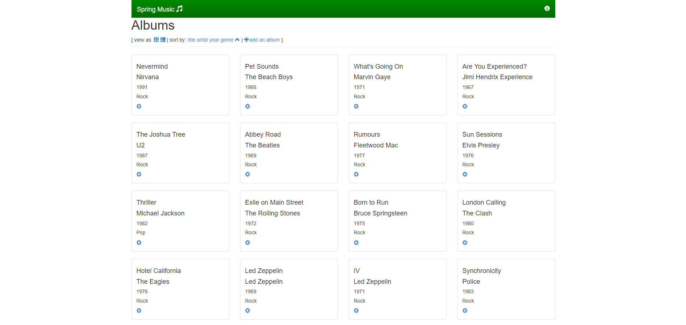
파이프라인이 빌드~배포까지 자동 처리한 결과 — Spring Music 샘플 앱이 정상 접속된 화면(앨범 목록).
1강에서 배운 CI(지속적 통합)/CD(지속적 배포)의 정의 그대로입니다. 코드 변경이 생기면 빌드 → 테스트 → 배포까지 자동으로 이어지게 만들어, 사람이 각 단계를 수동으로 실행하며 생기는 실수와 지연을 없앱니다. "작업 트리거: Trigger when previous job is complete" 설정이 바로 이 자동 연결 고리입니다.
실무에서는 정적분석(Sonarway 등 SonarQube 계열) 단계가 "코드 품질 게이트" 역할을 해서, 품질 기준 미달 시 다음 단계(테스트/배포)로 진행되지 않도록 막는 데 쓰입니다.
각 작업(Job)은 독립된 실행 단위이지만, "이전 작업이 완료되면 실행"이라는 트리거로 체인처럼 연결되어 있어 Build → Static-Analysis → JUnit-Test → Deploy 순서가 강제됩니다.
자동 세차장을 떠올리면 됩니다 — 차(소스 코드)를 넣으면 세차(Build) → 왁스(정적분석) → 헹굼(테스트) → 건조(배포)까지 사람이 중간에 손대지 않아도 순서대로 자동 진행됩니다. 한 단계가 실패하면(예: 세차가 제대로 안 됐으면) 다음 단계로 넘어가지 않는 것도 동일합니다.
포털은 "YAML을 GUI로 다루는 것"(u2-1)과 "빌드~배포를 자동 연결하는 것"(u2-2) 두 기능을 보여줬습니다. Part Ⅲ은 이 두 기능에 소스 저장소 관리까지 더해 실제 MSA(4개 서비스)를 배포합니다.
Container Platform 활용 — MSA 샘플앱 전체 자동배포
Container Platform의 세 가지 서비스 — ConfigMap(환경변수), Source Control(소스 저장소), Pipeline(빌드/배포 자동화) — 을 모두 엮어서, 4개의 독립 마이크로서비스로 구성된 MSA 샘플 앱을 사람이 kubectl을 직접 치지 않고 배포합니다.
01 · 실습 개요 & MSA Sample 아키텍처
이번 실습 대상은 msa-sample-api, msa-sample-sd-api, msa-sample-ui, msa-sample-gateway 4개 서비스로 구성된 샘플 앱입니다(가이드: https://github.com/K-PaaS/msa-sample). 실습 절차는 크게 ① ConfigMap 생성 → ② 4개 레파지토리 구축(소스컨트롤) → ③ 4개 서비스 빌드 및 배포(파이프라인) 순서로 진행됩니다.
| 서비스 | 역할(원본 문구) |
|---|---|
msa-sample-ui | 화면 서비스를 담당하는 API |
msa-sample-gateway | API 서버 앞단에서 여러 API 서버들의 End-Point를 단일화하여 라우팅, 로드밸런싱 등의 역할을 하는 API |
msa-sample-api | 메인 화면 정보에 대한 서비스를 담당하는 API |
msa-sample-sd-api | Side 화면 정보에 대한 서비스를 담당하는 API |
요청 흐름: 사용자 → msa-sample-ui → msa-sample-gateway → (msa-sample-api, msa-sample-sd-api)
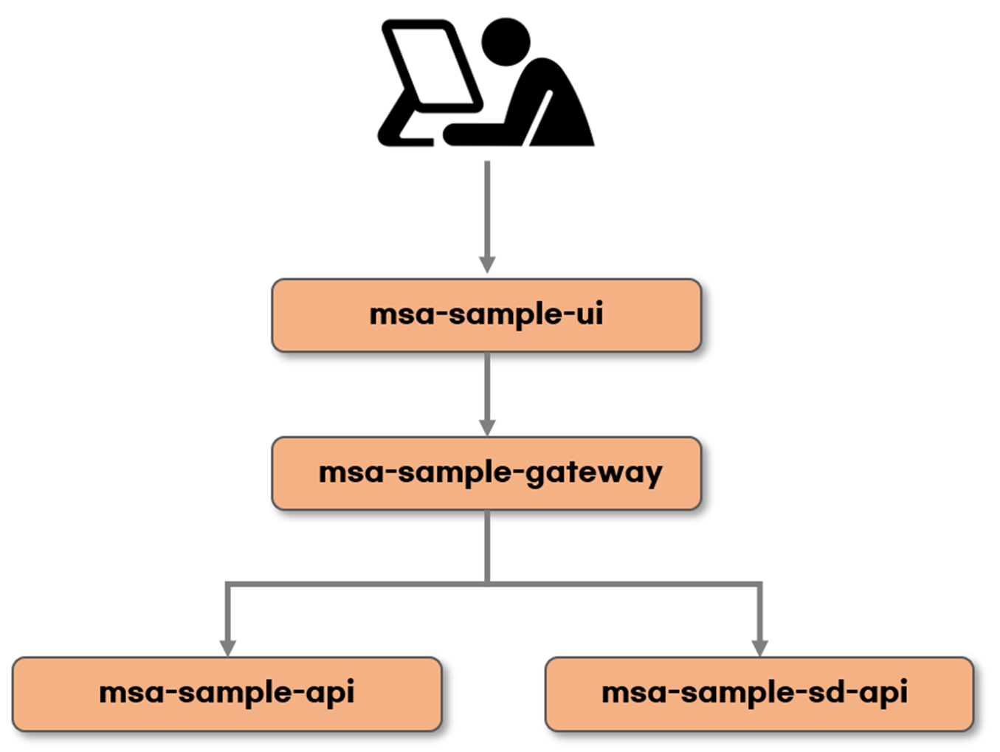
이번엔 "직접 빌드/배포"가 아니라 "소스 저장소 + 파이프라인이 대신 빌드/배포"하는 흐름을 보여주기 위해서입니다. 즉 같은 MSA 구조를, 이번엔 PaaS가 자동화해주는 방식으로 재현합니다.
요청 흐름(사용자 → msa-sample-ui → msa-sample-gateway → msa-sample-api/msa-sample-sd-api)은 Part Ⅰ의 게시판 앱 구조(ui → zuul → board/comment/user)와 같은 패턴입니다. msa-sample-gateway가 edu-msa-zuul의 API Gateway 역할을, msa-sample-api/-sd-api가 각 백엔드 API 역할을 대신합니다.
02 · 포털 로그인 & ConfigMap으로 환경변수 배포
4개 서비스가 서로의 주소(URL)를 알아야 통신할 수 있는데, 이 주소들을 각 서비스 코드에 하드코딩하는 대신 Kubernetes ConfigMap이라는 리소스에 모아두고 실행 시점에 주입합니다.
-
포털 접속 및 로그인
URL: http://portal.${HOST_DOMAIN} ( ${HOST_DOMAIN} = Ingress 노드 플로팅 IP.nip.io ) 관리자 계정 초기 로그인 → Username: admin, Password: 초기화한 패스워드값 (이후) 회원가입을 통해 등록한 사용자 계정으로 재로그인 -
ConfigMap 생성 (MSA 구성 배포 전 환경변수)
이 코드가 하는 일을 한 줄로 요약하면: 4개 서비스가 서로의 주소를 찾을 수 있도록, 그 주소값들을 담은 ConfigMap 리소스를 포털에 등록하는 것입니다.
# ConfigMap YAML 링크: https://github.com/K-PaaS/msa-sample/blob/master/resource/configmap.yml # → 내용 복사 → 메모장에 붙여넣기 → {K8S_MASTER_NODE_IP} 자리에 컨트롤플레인 노드 퍼블릭 IP 입력 [Configmaps] 메뉴 → [생성] 클릭 → [Namespace] 'default' 선택 → YAML 붙여넣기 → 저장ConfigMap 데이터 예시(화면에서 확인되는 키, 실제 IP·포트 값은 실습 환경에 따라 달라짐):
MSA_API_URL: http://xx.xx.xx.xx:30010 MSA_SD_API_URL: http://xx.xx.xx.xx:30014 MSA_UI_URL: http://xx.xx.xx.xx:30011 MSA_GATEWAY_URL: http://xx.xx.xx.xx:30012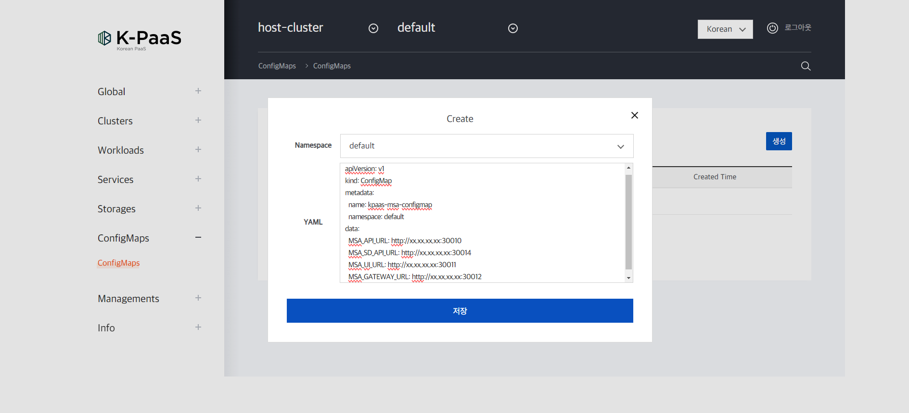
MSA Sample 4개 서비스의 주소(MSA_API_URL 등)를 하나의 ConfigMap으로 등록하는 화면.
이것이 1강 12 Factor App의 "설정(Config)은 환경(environment)에 저장" 원칙의 실제 구현입니다. 각 서비스가 상대방 주소를 코드에 박아두면, 배포 환경(IP/포트)이 바뀔 때마다 코드를 다시 빌드해야 합니다. ConfigMap으로 분리하면 코드는 그대로 두고 설정값만 바꿔서 재배포할 수 있습니다.
포털에 등록한 ConfigMap(MSA_API_URL 등 4개 키)은 각 서비스 Pod가 실행될 때 환경변수 형태로 주입됩니다. 서비스 코드는 이 환경변수를 읽어 상대 서비스의 주소를 알아내므로, 코드를 다시 빌드하지 않고도 ConfigMap 값만 갱신해 재배포할 수 있습니다.
전화번호를 사람 머릿속(코드)에 외워두면 번호가 바뀔 때마다 그 사람을 다시 교육시켜야 합니다. 대신 전화번호부(ConfigMap)에 적어두면 번호부만 고쳐 써도 누구나 최신 번호를 찾아 쓸 수 있습니다 — ConfigMap이 하는 일이 정확히 이것입니다.
03 · Source Control 서비스로 레파지토리 구성
Container Platform에 내장된 소스컨트롤(Git) 서비스에 4개의 레파지토리(msa-sample-api, -sd-api, -ui, -gateway)를 만들고, K-PaaS 공식 GitHub의 원본 소스를 그대로 미러링해 옵니다.
사전 준비 (최초 1회):
# 소스컨트롤 서비스 접속 (단독배포형 기준)
URL: http://{K8S_MASTER_NODE_IP}:30094
# 접속 초기 정보 확인
$ kubectl get configmap -n cp-portal cp-portal-configmap -o yaml | grep KEYCLOAK_ADMIN
# 레파지토리 사용을 위한 비밀번호 설정 (필수)
오른쪽 위 [ID] 클릭 → [내 정보관리] 클릭 → [비밀번호] 수정 → [수정] 클릭
(이 비밀번호는 이후 계속 재사용하므로 잊지 않도록 주의)
# Git Bash 다운로드 및 설치
다운로드 링크: https://git-scm.com/downloads레파지토리 생성 (4개 서비스 공통 패턴, msa-sample-api 예시):
-
신규생성
[신규생성] 클릭 → [레파지토리명] "msa-sample-api" 입력 → [유형] 'Git' 선택 → [생성] 클릭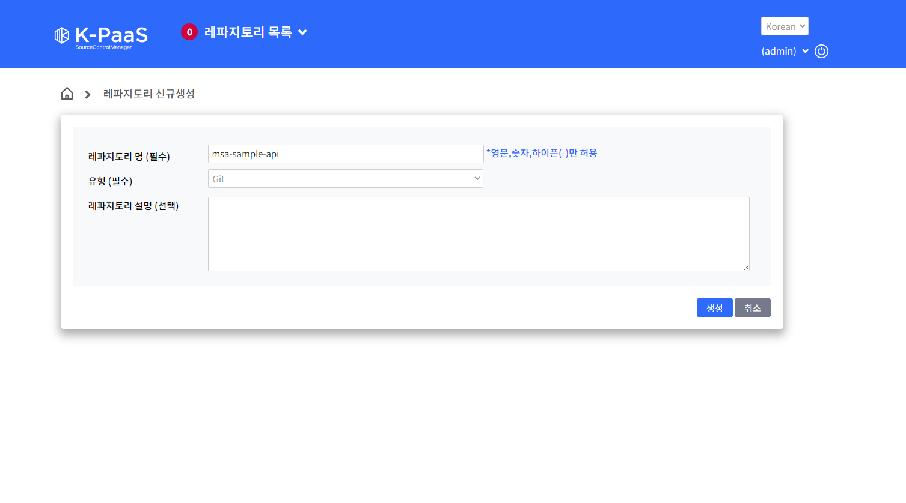
소스컨트롤 포털에서 레파지토리(msa-sample-api)를 Git 유형으로 신규 생성하는 화면 — 나머지 3개(sd-api, ui, gateway)도 동일하게 반복한다. -
원본 소스 주소 확인
[K-PaaS Github] 접속 → 'msa' 검색 → [msa-sample-api] 클릭 → [Code] 클릭 → [URL] 복사 -
로컬에서 미러 클론
이 코드가 하는 일을 한 줄로 요약하면: K-PaaS 공식 GitHub의 원본 소스를 브랜치·이력까지 통째로 내 컴퓨터에 복사해오는 것입니다.
[새 폴더(msa-sample)] 생성 → 그 안에서 [Git Bash] 실행 $ git clone --mirror https://github.com/K-PaaS/msa-sample-api.git $ cd msa-sample-api.git/ -
소스컨트롤 포털의 레파지토리 클론 주소 복사
[소스컨트롤 포털] 접속 → [레파지토리(msa-sample-api)] 선택 → [레파지토리 클론] 클릭 → [복사] 클릭 -
업로드
이 코드가 하는 일을 한 줄로 요약하면: 방금 내 컴퓨터로 복사해온 원본 소스를 Container Platform 내장 소스컨트롤 저장소로 그대로 옮겨 싣는 것입니다.
$ git push --mirror http://{KUBERNETE_IP}:30092/scm/git/{REPOSITORY_NAME} # ※ 소스컨트롤 [내정보관리]에서 설정한 ID/PW 입력 (로그인 창이 뜨지 않으면 생략) -
업로드 확인
[소스컨트롤 포털] 접속 → [레파지토리(msa-sample-api)] 선택 → 업로드된 소스 파일 확인→ 동일한 1)~6) 과정을 msa-sample-sd-api, msa-sample-ui, msa-sample-gateway 에도 반복합니다(Github URL: msa-sample-sd-api.git / msa-sample-ui.git / msa-sample-gateway.git).
실무에서 사내·폐쇄망 환경은 외부 인터넷(공개 GitHub)에 직접 접근하지 못하는 경우가 많습니다. Container Platform 내장 소스컨트롤에 미러링해두면, 이후 파이프라인이 외부 GitHub이 아니라 내부망의 소스컨트롤 주소만 보고도 빌드할 수 있습니다.
소스컨트롤 접속 초기 계정 정보를 kubectl get configmap ... 명령으로 확인하는 것에서 알 수 있듯, 포털 서비스 자체도 결국 쿠버네티스 위에서 도는 애플리케이션입니다.
레파지토리용 비밀번호는 이후 계속 재사용해야 하므로 반드시 기억해 둘 것. git push --mirror 시 로그인 창이 뜨지 않으면 이미 인증된 상태이므로 그 단계는 생략한다.
04 · Pipeline 서비스 설정 — Kube Config 등록 & 파이프라인 생성
파이프라인이 실제로 Kubernetes 클러스터에 배포까지 하려면, 파이프라인 서비스가 클러스터에 접속할 수 있는 인증 정보(kube config)를 먼저 등록해야 합니다.
-
파이프라인 접속 및 로그인
URL: http://{K8S_MASTER_NODE_IP}:30084 $ kubectl get configmap -n cp-portal cp-portal-configmap -o yaml | grep KEYCLOAK_ADMIN -
Kube Config 조회 (컨트롤플레인 노드에서)
이 코드가 하는 일을 한 줄로 요약하면: 파이프라인 서비스에 등록해줄 클러스터 접속 인증 정보(kube config) 파일 내용을 확인해서 복사하는 것입니다.
$ ls .kube/ $ cat .kube/kubeconfig # (복사 시 메모장 활용, 빈 칸/빈 줄이 추가되지 않도록 주의) -
Kube Config 등록
[파이프라인관리] 메뉴 → [Kubernetes 정보관리] 클릭 → [Kube Config 등록] 클릭 → [Config 명] 입력 → 복사한 [Kube Config] 붙여넣기 → [등록] 클릭 -
파이프라인 생성
[Home] 이동 → [신규생성(New Pipeline)] 클릭 → [파이프라인명] 입력(예: msa-sample-pipeline) → [생성] 클릭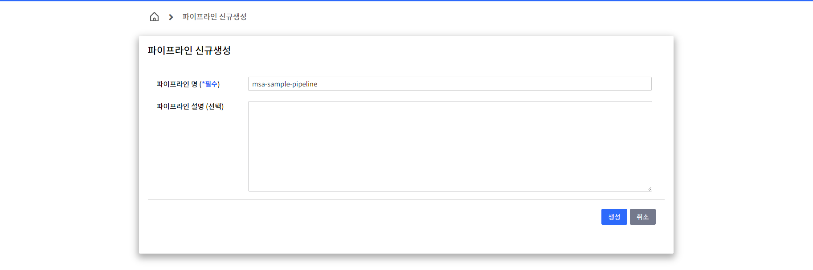
Kube Config 등록을 마친 뒤 새 파이프라인(msa-sample-pipeline)을 생성하는 화면.
파이프라인은 소스를 빌드하는 것과 별개로, 빌드된 이미지를 "어느 클러스터의 어느 네임스페이스에 배포할지" 알아야 합니다. kube config는 바로 그 클러스터 접속 인증서/주소 정보이며, 이것이 없으면 파이프라인의 Deploy 작업이 대상 클러스터를 찾을 수 없습니다.
여기서 등록한 'msa-kube-config'는 이후 u3-5에서 4개 서비스의 배포(Deploy) 작업마다 "Kubernetes 정보" 항목에서 반복적으로 선택하게 됩니다 — 한 번만 등록해두면 여러 배포 작업이 함께 재사용합니다.
kube config는 특정 사무실(Kubernetes 클러스터)에 들어갈 수 있는 출입증이라고 생각하면 됩니다. 파이프라인이 이 출입증을 미리 등록해둬야, 배포 작업을 실행할 때마다 "이 사무실에 들어가서 서비스를 배치해도 된다"는 자격을 증명할 수 있습니다.
kube config 복사 시 빈 칸이나 빈 줄이 섞이면 등록이 실패하거나 인증 오류가 날 수 있으므로 메모장 등에서 원본 그대로 복사해야 합니다.
05 · 빌드+배포 작업 구성 및 실행 (4개 서비스 반복)
u3-4에서 만든 파이프라인 안에 4개 서비스(api, sd-api, ui, gateway) 각각에 대해 "빌드 작업"과 "배포 작업"을 한 쌍씩 추가하고 실행합니다. 총 4쌍(8개 작업)이 만들어집니다.
공통 패턴 (msa-sample-api 예시, 나머지 3개도 이름만 바꿔 동일 반복):
-
새 작업(그룹) 추가
생성한 [파이프라인(msa-sample-pipeline)] 클릭 → [+ 새 작업 추가] 클릭 (2번째 서비스부터는 [새 작업그룹 추가] 클릭) -
빌드 작업 구성상세
이 코드가 하는 일을 한 줄로 요약하면: msa-sample-api 소스를 빌드해 컨테이너 이미지로 만들 작업을 설정하는 것이며, Dockerfile은 이미지 이름만 입력하면 파이프라인이 알아서 자동으로 만들어줍니다.
내 작업: "msa-api 빌드" 입력 → 작업유형 'Build' 선택 → 빌더유형 'Gradle' 선택 → 빌드 컨테이너 유형 'Kubernetes' 선택 → 컨테이너 이미지 저장소 정보: "msasampleapi" 입력 (Harbor에 저장할 이미지 이름, 소문자만) → [Docker File 생성하기] 클릭 # 자동 생성된 Docker File 예시: # FROM openjdk:8-jdk-alpine # ADD build/libs/$buildFile $buildFile # ENV JAVA_OPTS="org.springframework.boot.loader.WarLauncher -Xms512m -Xmx1024m ..."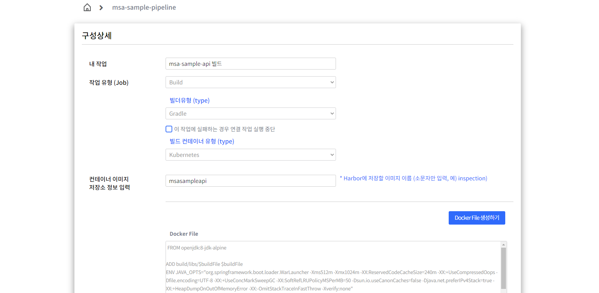
빌드 작업 구성 화면 — 이미지 저장소 이름만 입력하면 Docker File을 자동으로 생성해준다(Gradle / Kubernetes 빌드 컨테이너). -
형상관리정보 입력
SCM 'Git' 선택 → 레파지토리 ID 입력 → 레파지토리 PW 입력 → 레파지토리 경로: http://{KUBERNETE_IP}:30092/scm/git/{REPOSITORY_NAME} → [브랜치조회] 클릭 → 작업트리거 'Trigger when previous job is complete' 선택 → [저장] 클릭 -
배포 작업 새로 생성
빌드 작업 생성 확인 → [추가] 버튼 클릭 -
배포 작업 구성상세
작업명: "msa-api 배포" 입력 → 작업유형 'Deploy' 선택 → 유형 'Development' 선택 → 입력유형 '1. msa-api 빌드' 선택 (직전 빌드 작업 참조) → 앱 이름: "msa-sample-api" 입력 → 앱 유형 'BackEnd' 선택 → Kubernetes 정보: 등록한 'msa-kube-config' 선택 -
배포 YAML 입력
이 코드가 하는 일을 한 줄로 요약하면: msa-sample-api를 어떻게 배포할지 정의한 원본 YAML(Deployment/Service)을 그대로 가져와 파이프라인의 배포 작업에 붙여넣는 것입니다.
# DEPLOYMENT.YML 링크: https://github.com/K-PaaS/msa-sample/blob/master/api/deployment.yml # SERVICE.YML 링크 : https://github.com/K-PaaS/msa-sample/blob/master/api/service.yml 위 링크 접속 → 내용 복사 → [DEPLOYMENT.YML] / [DEPLOYMENT_SERVICE.YML]에 붙여넣기 → 작업트리거 선택 → [저장] 클릭 -
작업 실행
빌드, 배포 작업 [실행](아이콘 클릭) → '작업(Job): 실행중'으로 상태 변경 → 시계 아이콘 클릭 시 로그 확인 가능 → [목록] 클릭 시 파이프라인 목록으로 이동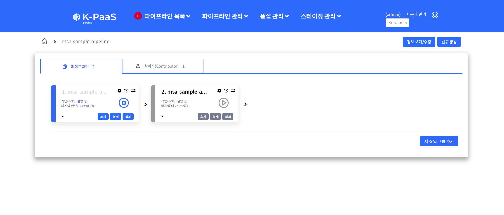
빌드 → 배포 작업이 순서대로 실행되는 모습 — 실행 아이콘과 상태 표시로 진행 상황을 확인할 수 있다. -
나머지 3개 서비스 반복
msa-sample-sd-api(이미지명 "msasamplesdapi", DEPLOYMENT.YML →
.../sd-api/deployment.yml), msa-sample-ui(이미지명 "msasampleui",.../ui/deployment.yml), msa-sample-gateway(이미지명 "msasamplegateway",.../gateway/deployment.yml) 각각 [새 작업그룹 추가]로 새 빌드+배포 쌍을 만들어 1)~7) 동일하게 반복합니다.
MSA는 서비스가 각자 독립적으로 빌드·배포되어야 한다는 원칙(1강, u1-1)이 파이프라인 설계에도 그대로 반영된 것입니다. 4개 서비스를 하나의 빌드 작업으로 합치면, 한 서비스만 고쳐도 전체를 다시 빌드해야 하는 모놀리식 문제가 파이프라인 안에서 재현되어 버립니다.
빌드가 실패하면 트리거 조건이 충족되지 않아 배포 작업이 아예 실행되지 않습니다. 즉 깨진 이미지가 클러스터에 배포되는 것을 파이프라인 구조 자체가 막아줍니다.
레파지토리 경로 접속 시 로그인 창이 뜨지 않으면 이미 인증된 상태이므로 그 단계는 생략해도 됩니다(4번 반복하는 동안 흔히 헷갈리는 포인트).
06 · 배포 확인 및 MSA 접속
4개 서비스 모두 빌드+배포가 끝나면, Container Platform Portal에서 Deployment/Service 리소스를 조회하고 실제 애플리케이션 엔드포인트로 접속해 확인합니다.
[Container Platform Portal] 접속 (http://portal.{K8S_MASTER_NODE_IP}.nip.io/)
→ [Workloads] 메뉴 → [Deployments] 선택 → 리소스 조회
→ [Services] 메뉴 → [Services] 선택 → 리소스 조회
# 접속
{K8S_MASTER_NODE_IP}:30011/hello30011/hello인가u3-2에서 ConfigMap에 등록한 MSA_UI_URL의 포트가 30011이었습니다. 4개 서비스가 모두 정상 배포되면, 그중 화면(UI) 서비스인 msa-sample-ui의 NodePort(30011)로 접속해 전체 MSA 앱이 정상 동작하는지 확인합니다.
ConfigMap(환경변수, u3-2) → Source Control(소스 저장소, u3-3) → Pipeline(빌드+배포 자동화, u3-4~u3-5)이라는 3개 K-PaaS 서비스가 순서대로 맞물려, 사람이 kubectl 명령어를 한 줄도 치지 않고 4개 마이크로서비스를 배포했습니다. Part Ⅰ에서 사람이 직접 했던 모든 작업(이미지 빌드, yaml 수정, apply)을 파이프라인이 대신 수행한 것입니다.
인트로의 비교표 A(배포 방식 3단 비교)를 다시 참고하면, Part Ⅰ·Ⅱ·Ⅲ가 같은 목표를 얼마나 다른 자동화 수준으로 달성했는지 한눈에 정리됩니다.
Kubernetes CLI 실습
지금까지 포털/파이프라인이 대신해주던 일을 다시 원래의 kubectl 명령어로 되짚어 정리합니다. 화면 뒤에서 실제로 무슨 일이 벌어지는지 이해하기 위한 마무리 실습입니다.
01 · kubectl 기본 명령어 — Namespace / Pod / Service
예제1은 kubectl run으로 만든 단독 Pod를 Service로 연결하는 가장 기본적인 흐름입니다.
이 코드가 하는 일을 한 줄로 요약하면: 실습용 구역(Namespace)을 만들고 그 안에 nginx 파드 하나를 띄운 뒤, 외부에서 접속할 수 있는 창구(Service)를 연결하는 것입니다.
# Namespace 배포/조회
$ kubectl create namespace soongsil
$ kubectl get namespace
# Pod 배포
$ kubectl run ssu-nginx --image=nginx:1.25 -n soongsil
# Pod 조회/상세조회
$ kubectl get pod -n soongsil
$ kubectl describe pod ssu-nginx -n soongsil
# Service 배포 (Pod 연결)
$ kubectl expose pod ssu-nginx --type=NodePort --port 80 --target-port=80 --name=ssu-nginx -n soongsil
# Service 조회/상세조회
$ kubectl get service -n soongsil
$ kubectl describe service ssu-nginx -n soongsil예시 화면 · 참고용 CLUSTER-IP와 NodePort 번호(3xxxx)는 클러스터마다 자동 할당되어 달라진다 — kubectl run으로 만든 단독 Pod를 Service로 연결했을 때의 일반적인 조회 결과 형태다.
포털/파이프라인은 결국 이 kubectl 명령어들을 사람 대신 실행해 주는 것일 뿐입니다. CLI를 알아야 포털 화면 뒤에서 무슨 일이 벌어지는지 이해하고, 포털이 없는 환경(운영 서버 터미널 등)에서도 동일하게 다룰 수 있습니다.
kubectl expose pod는 지정한 Pod의 레이블을 selector로 삼아 Service를 만듭니다. 이 Service가 NodePort(80)를 열어주므로, 클러스터 외부에서 고정 포트로 접속하면 내부적으로 해당 Pod의 컨테이너 포트(80)까지 트래픽이 전달됩니다.
02 · kubectl 기본 명령어 — Deployment / 삭제
예제2는 kubectl create deployment로 만든 Deployment가 예제1의 단독 Pod와 어떻게 다르게 동작하는지(자동 복구) 비교하는 실습입니다.
이 코드가 하는 일을 한 줄로 요약하면: Pod 2개를 유지하는 Deployment를 만든 뒤 Pod를 강제로 지워보면서, 자동으로 다시 채워지는지(자동 복구)를 직접 확인하는 것입니다.
# Deployment 배포
$ kubectl create deployment ssu-nginx2 --image=nginx:1.26 --port=80 --replicas=2 -n soongsil
# Deployment 조회/상세조회
$ kubectl get deployment -n soongsil
$ kubectl describe deployment ssu-nginx2 -n soongsil
# Service 배포 (Deployment 연결)
$ kubectl expose deployment ssu-nginx2 --type=NodePort --port 80 --target-port=80 --name=ssu-nginx2 -n soongsil
# Service 조회/상세조회
$ kubectl get service -n soongsil
$ kubectl describe service ssu-nginx2 -n soongsil
# Service 수정 (NodePort 변경)
$ kubectl edit service ssu-nginx2 -n soongsil
# 수정한 NodePort로 브라우저 접속: {KUBERNETES_IP}:{NODE_PORT}
# Pod 삭제
$ kubectl delete pod ssu-nginx2-568f6d6b4-d6x5m -n soongsil
$ kubectl get pod -n soongsil # Pod 개수가 유지되는지 확인
# Deployment 삭제
$ kubectl delete deployment ssu-nginx2 -n soongsil
$ kubectl get pod -n soongsil # Pod 삭제 확인예시 화면 · 참고용 삭제한 -d6x5m Pod는 사라졌지만 개수(2개)는 그대로이고, AGE가 "6s"인 새 Pod(-f8x2q)가 자동으로 채워진 것을 볼 수 있다 — Deployment의 자동 복구 동작을 보여주는 일반적인 예시 화면이다.
이것이 Deployment의 핵심 동작입니다 — Deployment는 "몇 개의 Pod를 유지할지"를 선언(replicas)해두고, 실제 Pod가 죽으면 즉시 새 Pod를 만들어 채웁니다. 반면 u4-1에서 kubectl run으로 만든 단독 Pod는 지우면 그걸로 끝입니다.
kubectl delete pod로 Pod 하나를 삭제해도 Deployment 컨트롤러가 즉시 감지하고 replicas 수만큼 새 Pod를 재생성합니다. 반면 kubectl delete deployment는 컨트롤러 자체를 지우므로 Pod도 함께 사라집니다.
Pod 하나만 만드는 것은 "직원 한 명을 그냥 채용"하는 것이고, Deployment는 "이 자리는 항상 2명이 있어야 한다"는 규정을 세워두는 것에 가깝습니다. 직원 한 명이 그만두면(Pod 삭제) 그 규정에 따라 바로 새 직원을 채용해 자리를 채우지만, 규정 자체(Deployment)를 없애면 더 이상 채용도 일어나지 않습니다.
예제1(kubectl run 단독 Pod)과 예제2(kubectl create deployment)의 차이를 반드시 구분해서 이해해야 합니다 — Pod 단독 생성은 Deployment의 "자동 복구" 기능이 없습니다.
| 목적 | 명령어 패턴 | 실습 예시 |
|---|---|---|
| Namespace 생성 | kubectl create namespace {NAME} | kubectl create namespace soongsil |
| Namespace 조회 | kubectl get namespace | — |
| Pod 생성(단독) | kubectl run {POD} --image={IMG}:{TAG} -n {NS} | kubectl run ssu-nginx --image=nginx:1.25 -n soongsil |
| Pod 조회/상세 | kubectl get pod -n {NS} / kubectl describe pod {POD} -n {NS} | — |
| Service 생성(Pod 연결) | kubectl expose pod {POD} --type=NodePort --port {P} --target-port={TP} --name={SVC} -n {NS} | kubectl expose pod ssu-nginx --type=NodePort --port 80 --target-port=80 --name=ssu-nginx -n soongsil |
| Deployment 생성 | kubectl create deployment {NAME} --image={IMG}:{TAG} --port={P} --replicas={N} -n {NS} | kubectl create deployment ssu-nginx2 --image=nginx:1.26 --port=80 --replicas=2 -n soongsil |
| Deployment 조회/상세 | kubectl get deployment -n {NS} / kubectl describe deployment {NAME} -n {NS} | — |
| Service 생성(Deployment 연결) | kubectl expose deployment {NAME} --type=NodePort --port={P} --target-port={TP} --name={SVC} -n {NS} | kubectl expose deployment ssu-nginx2 --type=NodePort --port 80 --target-port=80 --name=ssu-nginx2 -n soongsil |
| Service 수정 | kubectl edit service {SVC} -n {NS} | kubectl edit service ssu-nginx2 -n soongsil |
| Pod 삭제 | kubectl delete pod {POD} -n {NS} | kubectl delete pod ssu-nginx2-568f6d6b4-d6x5m -n soongsil |
| Deployment 삭제 | kubectl delete deployment {NAME} -n {NS} | kubectl delete deployment ssu-nginx2 -n soongsil |
실전 실습 자료 · 트러블슈팅 — 2026-07-14 수업 원본
이 절은 실제 2026-07-14 수업에서 진행한 실습 원본 파일입니다. Part Ⅰ에서 설명한 MSA 게시판 배포를 그날 학생이 직접 실행한 명령어 기록과, 실습 중 실제로 겪은 오류 2건의 트러블슈팅 노트를 재구성 없이 그대로 옮겼습니다.
01 · 실습 원본 절차 — MSA Application 배포 (학생 실행 기록)
원본 파일: MSA_게시판 실습 자료.txt. Part Ⅰ(u1-2~u1-7)에서 개념 설명용으로 정리한 절차와 같은 배포이지만, 아래는 그날 실제로 입력한 명령어와 SQL을 그대로 옮긴 것입니다.
-
배포 파일 다운로드
$ cd ~ $ git clone https://github.com/K-PaaS/edu-msa-file.git -
redis-msa-ui.yaml 수정 & 배포
$ vim ~/edu-msa-file/Kubernetes/redis-msa-ui.yaml $ cd ~/edu-msa-file/Kubernetes/ $ kubectl apply -f redis-msa-ui.yaml -
mysql yaml 수정 & 배포 (board/comment/user)
$ vim ~/edu-msa-file/Kubernetes/mysql-msa-board.yaml $ vim ~/edu-msa-file/Kubernetes/mysql-msa-comment.yaml $ vim ~/edu-msa-file/Kubernetes/mysql-msa-user.yaml $ cd ~/edu-msa-file/Kubernetes/ $ kubectl apply -f mysql-msa-board.yaml -f mysql-msa-comment.yaml -f mysql-msa-user.yaml -
Board DB 접속 · 로그인 · DB/테이블 생성 (원본 그대로)
$ kubectl get pods # kubectl exec -it ${POD_NAME} -- /bin/bash 예시) $ kubectl exec -it mysql-msa-board-xxxxxxxxxx-xxxxx -- /bin/bash # mysql -u root -p Enter password: password mysql> CREATE DATABASE msa_board default CHARACTER SET UTF8; mysql> USE msa_board; mysql> CREATE TABLE `TB_BOARD` ( `board_seq` int(11) NOT NULL AUTO_INCREMENT, `board_title` varchar(50) COLLATE utf8_unicode_ci NOT NULL, `board_text` mediumtext COLLATE utf8_unicode_ci, `write_user_id` varchar(20) COLLATE utf8_unicode_ci NOT NULL, `write_user_name` varchar(20) COLLATE utf8_unicode_ci NOT NULL, `use_yn` varchar(1) COLLATE utf8_unicode_ci DEFAULT 'Y', `create_dt` datetime NOT NULL, `update_dt` datetime NOT NULL, PRIMARY KEY (`board_seq`) ) ENGINE=InnoDB AUTO_INCREMENT=15 DEFAULT CHARSET=utf8 COLLATE=utf8_unicode_ci; > exit # exit -
Comment DB 접속 · 로그인 · DB/테이블 생성 (원본 그대로)
$ kubectl get pods # kubectl exec -it ${POD_NAME} -- /bin/bash 예시) $ kubectl exec -it mysql-msa-comment-xxxxxxxxxx-xxxxx -- /bin/bash # mysql -u root -p Enter password: password mysql> CREATE DATABASE msa_comment default CHARACTER SET UTF8; mysql> USE msa_comment; mysql> CREATE TABLE `TB_COMMENT` ( `comment_seq` int(11) NOT NULL AUTO_INCREMENT, `board_seq` int(11) NOT NULL, `comment` varchar(255) COLLATE utf8_unicode_ci DEFAULT NULL, `write_user_id` varchar(20) COLLATE utf8_unicode_ci NOT NULL, `write_user_name` varchar(20) COLLATE utf8_unicode_ci NOT NULL, `use_yn` varchar(1) COLLATE utf8_unicode_ci DEFAULT 'Y', `create_dt` datetime NOT NULL, `update_dt` datetime NOT NULL, PRIMARY KEY (`comment_seq`) ) ENGINE=InnoDB AUTO_INCREMENT=18 DEFAULT CHARSET=utf8 COLLATE=utf8_unicode_ci; > exit # exit -
User DB 접속 · 로그인 · DB/테이블 생성 (원본 그대로)
$ kubectl get pods # kubectl exec -it ${POD_NAME} -- /bin/bash 예시) $ kubectl exec -it mysql-msa-user-xxxxxxxxxx-xxxxx -- /bin/bash # mysql -u root -p Enter password: password mysql> CREATE DATABASE msa_user default CHARACTER SET UTF8; mysql> USE msa_user; mysql> CREATE TABLE `TB_USER` ( `user_seq` int(11) NOT NULL AUTO_INCREMENT, `user_id` varchar(20) COLLATE utf8_unicode_ci NOT NULL, `user_passwd` varchar(256) COLLATE utf8_unicode_ci NOT NULL, `user_name` varchar(20) COLLATE utf8_unicode_ci NOT NULL, `use_yn` varchar(1) COLLATE utf8_unicode_ci DEFAULT 'Y', `create_dt` datetime NOT NULL, `update_dt` datetime NOT NULL, PRIMARY KEY (`user_seq`), UNIQUE KEY `id_key` (`user_id`) ) ENGINE=InnoDB AUTO_INCREMENT=15 DEFAULT CHARSET=utf8 COLLATE=utf8_unicode_ci; > exit # exitAUTO_INCREMENT 값이 board=15, comment=18, user=15로 서로 다른 것은 실습 중 실제로 데이터를 여러 번 넣고 지운 흔적입니다 — Part Ⅰ에 실린 예시 yaml은 AUTO_INCREMENT=1인 초기 상태입니다.
-
pom.xml 의존성 추가 (원본 파일 표기 그대로)
<dependency> <groupId>org.hibernate</groupId> <artifactId>hibernate-validator</artifactId> <version>6.0.12.Final</version> </dependency> <dependency> <groupId>cglib</groupId> <artifactId>cglib</artifactId> <version>3.2.7</version> </dependency> <dependency> <groupId>org.mybatis</groupId> <artifactId>mybatis-spring</artifactId> <version>1.3.2</version> </dependency> <dependency> <groupId>org.mybatis</groupId> <artifactId>mybatis</artifactId> <version>3.4.6</version> </dependency> <dependency> <groupId>mysql</groupId> <artifactId>mysql-connector-java</artifactId> <version>5.1.31</version> </dependency> 빌드시 'clean all' -> 'clean install'로 변경이 중
hibernate-validator 6.0.12.Final이 바로 아래 02번 트러블슈팅의 원인이 됩니다. -
이미지 저장소 로그인 & 빌드·태그·업로드 (podman, 5개 서비스)
$ sudo podman login docker.io Username: 아이디 입력 Password: 패스워드 입력 $ cd ~/edu-msa-file/Docker/edu-msa-board/ $ sudo podman build --tag edu-msa-board:latest . $ sudo podman tag edu-msa-board ${도커허브 ID}/edu-msa-board $ sudo podman push ${도커허브 ID}/edu-msa-board $ cd ~/edu-msa-file/Docker/edu-msa-comment/ $ sudo podman build --tag edu-msa-comment:latest . $ sudo podman tag edu-msa-comment ${도커허브 ID}/edu-msa-comment $ sudo podman push ${도커허브 ID}/edu-msa-comment $ cd ~/edu-msa-file/Docker/edu-msa-ui/ $ sudo podman build --tag edu-msa-ui:latest . $ sudo podman tag edu-msa-ui ${도커허브 ID}/edu-msa-ui $ sudo podman push ${도커허브 ID}/edu-msa-ui $ cd ~/edu-msa-file/Docker/edu-msa-user/ $ sudo podman build --tag edu-msa-user:latest . $ sudo podman tag edu-msa-user ${도커허브 ID}/edu-msa-user $ sudo podman push ${도커허브 ID}/edu-msa-user $ cd ~/edu-msa-file/Docker/edu-msa-zuul/ $ sudo podman build --tag edu-msa-zuul:latest . $ sudo podman tag edu-msa-zuul ${도커허브 ID}/edu-msa-zuul $ sudo podman push ${도커허브 ID}/edu-msa-zuulPart Ⅰ(u1-6)의 정리본은
docker명령어 기준이지만, 실제 수업 환경에서는sudo podman(도커 호환 CLI)으로 동일한 build/tag/push 절차를 수행했습니다. -
yaml 최종 수정 · 배포 · 접속 확인
$ vim ~/edu-msa-file/Kubernetes/edu-msa-board.yaml $ vim ~/edu-msa-file/Kubernetes/edu-msa-comment.yaml $ vim ~/edu-msa-file/Kubernetes/edu-msa-ui.yaml $ vim ~/edu-msa-file/Kubernetes/edu-msa-user.yaml $ vim ~/edu-msa-file/Kubernetes/edu-msa-zuul.yaml $ cd ~/edu-msa-file/Kubernetes/ $ kubectl apply -f edu-msa-board.yaml -f edu-msa-comment.yaml -f edu-msa-ui.yaml -f edu-msa-user.yaml -f edu-msa-zuul.yaml $ kubectl get pods $ kubectl get service # MSA Application 포털 접속 {KUBERNETES_IP}:30001/user/login
Part Ⅰ의 절차는 개념을 이해시키기 위해 다듬어 정리한 버전이고, 위 기록은 실습 당일 학생이 실제로 입력한 명령어와 SQL 그대로입니다. AUTO_INCREMENT 값이 board=15, comment=18, user=15로 제각각 남아있는 것도 실제로 데이터를 여러 번 넣고 지운 흔적입니다. 교재로 배운 절차와 실제 실습 결과물이 어떻게 다를 수 있는지 비교해 보는 것이 이 절의 목적입니다.
02 · 트러블슈팅 ① — hibernate-validator 버전 충돌
원본 파일: k8s_msa_summary(강사님 플러그인 추가 했을 경우 해결 방법).md (작성일 2026-07-15, 환경: NHN Cloud / Kubernetes v1.33.5 / K-PaaS MSA). 위 01번 단계에서 추가한 pom.xml 의존성 중 hibernate-validator 6.0.12가 실제로 기동 오류를 일으켰습니다.
증상 — 배포 후 다음 예외로 애플리케이션이 기동 실패:
BeanCreationException: Error creating bean with name
'org.springframework.validation.beanvalidation.OptionalValidatorFactoryBean'
Caused by: java.lang.NoSuchMethodError:
javax.validation.BootstrapConfiguration.getClockProviderClassName()실제 실습 결과 2026-07-14 수업 중 실제로 발생한 애플리케이션 기동 실패 로그다 — hibernate-validator 6.0.12과 Spring 4.3.x의 버전 불일치가 원인이었다.
원인 — 강사님 커스텀 dependency로 추가된 hibernate-validator 6.0.12가 Spring 4.3.x와 호환되지 않음(hibernate-validator 6.x는 Bean Validation 2.0을 요구하지만, Spring 4.3.x는 Bean Validation 1.1 기반이라 버전 불일치로 충돌 발생).
해결 — board / comment / user pom.xml의 커스텀 dependency 블록 수정:
이 코드가 하는 일을 한 줄로 요약하면: 충돌을 일으킨 hibernate-validator 버전을 낮추고, 함께 필요한 호환 라이브러리를 추가해 버전 충돌을 없애는 것입니다.
<!-- 변경 전 -->
<dependency>
<groupId>org.hibernate</groupId>
<artifactId>hibernate-validator</artifactId>
<version>6.0.12.Final</version>
</dependency>
<!-- 변경 후 -->
<dependency>
<groupId>org.hibernate</groupId>
<artifactId>hibernate-validator</artifactId>
<version>5.4.3.Final</version>
</dependency>
<dependency>
<groupId>javax.validation</groupId>
<artifactId>validation-api</artifactId>
<version>1.1.0.Final</version>
</dependency>변경 요약: ① hibernate-validator 6.0.12 → 5.4.3(다운그레이드) ② javax.validation 1.1.0 추가(Spring 4.3.x 호환 버전) ③ 원래 board에만 있던 httpclient 4.4를 comment/user에도 추가(누락 시 commons-logging 충돌로 동일 오류가 재발할 수 있음).
같은 실습 폴더의 pom.xml 추가.txt에는 다음 의존성 추가 내용도 함께 기록되어 있습니다(원문 그대로):
<dependency>
<groupId>org.mybatis</groupId>
<artifactId>mybatis</artifactId>
<version>3.5.19</version>
</dependency>
<!-- Spring JDBC -->
<dependency>
<groupId>org.springframework</groupId>
<artifactId>spring-jdbc</artifactId>
<version>6.2.8</version>
</dependency>재빌드 순서 (board/comment/user 3개 공통):
1. pom.xml 수정 (board / comment / user)
2. eGovFrame Maven clean install
3. MobaXterm으로 war 파일 서버 업로드
4. Docker 재빌드/푸시
sudo docker build --tag edu-msa-{서비스명}:latest .
sudo docker tag edu-msa-{서비스명} {도커허브ID}/edu-msa-{서비스명}
sudo docker push {도커허브ID}/edu-msa-{서비스명}
5. 파드 재시작
kubectl rollout restart deployment/edu-msa-{서비스명}원본 노트의 참고 사항을 그대로 옮기면: "강사님 제안처럼 커스텀 dependency 자체를 넣지 않으면 egovframework가 검증된 버전 조합을 자동으로 관리해줘서 이 충돌이 애초에 발생하지 않음." 즉 이번 충돌은 프레임워크 결함이 아니라, 검증되지 않은 최신 라이브러리 버전을 수동으로 끼워 넣었을 때 생기는 전형적인 의존성 충돌 사례입니다.
03 · 트러블슈팅 ② — MySQL PVC 미설정으로 인한 DB 데이터 소실
증상:
Caused by: java.sql.SQLSyntaxErrorException: Unknown database 'msa_user'실제 실습 결과 인스턴스를 재시작한 뒤 MySQL Pod가 재생성되면서 DB가 초기화되어 실제로 발생한 오류다 — PVC 미설정이 원인이었다.
원인 — MySQL deployment에 PVC(PersistentVolumeClaim)가 없어서, 인스턴스 중지/재시작으로 파드가 재생성될 때 DB 데이터가 초기화됨.
임시 해결(DB/테이블 재생성, board 예시 — comment/user도 deployment 이름·DB명·테이블명만 바꿔 동일 반복):
# board
kubectl exec -it -n default deployment/mysql-msa-board -- mysql -u root -ppassword -e "
CREATE DATABASE msa_board default CHARACTER SET UTF8;
USE msa_board;
CREATE TABLE \`TB_BOARD\` (
\`board_seq\` int(11) NOT NULL AUTO_INCREMENT,
\`board_title\` varchar(50) COLLATE utf8_unicode_ci NOT NULL,
\`board_text\` mediumtext COLLATE utf8_unicode_ci,
\`write_user_id\` varchar(20) COLLATE utf8_unicode_ci NOT NULL,
\`write_user_name\` varchar(20) COLLATE utf8_unicode_ci NOT NULL,
\`use_yn\` varchar(1) COLLATE utf8_unicode_ci DEFAULT 'Y',
\`create_dt\` datetime NOT NULL,
\`update_dt\` datetime NOT NULL,
PRIMARY KEY (\`board_seq\`)
) ENGINE=InnoDB AUTO_INCREMENT=1 DEFAULT CHARSET=utf8 COLLATE=utf8_unicode_ci;"comment/user도 동일 패턴(deployment/mysql-msa-comment, deployment/mysql-msa-user + 각 DB명·테이블명)으로 반복합니다.
근본 해결 — PVC yaml 작성 및 적용:
# 파일 생성
vim ~/edu-msa-file/Kubernetes/mysql-msa-board-pvc.yamlmysql-msa-board-pvc.yaml (comment/user도 name만 바꿔 동일):
이 코드가 하는 일을 한 줄로 요약하면: 파드가 재시작돼도 데이터가 사라지지 않도록, 1Gi 용량의 외부 저장 공간을 미리 요청해두는 선언입니다.
apiVersion: v1
kind: PersistentVolumeClaim
metadata:
name: mysql-msa-board-pvc
namespace: default
spec:
accessModes:
- ReadWriteOnce
resources:
requests:
storage: 1Gicd ~/edu-msa-file/Kubernetes/
kubectl apply -f mysql-msa-board-pvc.yaml
kubectl apply -f mysql-msa-comment-pvc.yaml
kubectl apply -f mysql-msa-user-pvc.yaml
# 상태 확인 (Bound 되어야 정상)
kubectl get pvc -n defaultMySQL Deployment에 PVC 연결 (mysql-msa-board.yaml 수정 예시):
spec:
containers:
- name: mysql-msa-board
image: mysql:5.7
env:
- name: MYSQL_ROOT_PASSWORD
value: "password"
volumeMounts:
- name: mysql-board-storage
mountPath: /var/lib/mysql # MySQL 데이터 저장 경로
volumes:
- name: mysql-board-storage
persistentVolumeClaim:
claimName: mysql-msa-board-pvc # 위에서 만든 PVC 이름comment / user도 동일한 방식으로 각각 적용. PVC 적용 후 파드가 재생성되면 DB가 다시 초기화되므로 위 "임시 해결" 명령어를 한 번 더 실행해야 하며, 이후부터는 인스턴스를 재시작해도 데이터가 유지됩니다.
PVC 없이 MySQL을 배포하면 데이터는 파드 컨테이너 내부(임시 레이어)에 저장되어, 파드가 재생성되는 순간(인스턴스 재시작, 노드 장애 등) 함께 사라집니다. PersistentVolumeClaim으로 /var/lib/mysql 경로를 외부 스토리지에 연결해두면 파드가 다시 만들어져도 같은 PVC를 다시 마운트하므로 데이터가 유지됩니다 — u1-3에서 강조한 "상태(Data)와 프로세스(Pod)의 분리" 원칙이 실제로 지켜지지 않으면 무슨 일이 생기는지 보여주는 사례입니다.
냉장고(파드, MySQL 컨테이너)를 새 것으로 교체하면 안에 있던 음식(데이터베이스 내용)도 함께 사라집니다. PVC는 냉장고 밖에 따로 마련해둔 저장 창고와 같아서, 냉장고를 통째로 바꿔도(파드 재생성) 창고에 있던 음식(데이터)은 그대로 남아있고 새 냉장고가 다시 그 창고를 연결해서 씁니다.
04 · 그 외 배포 트러블슈팅 & 인스턴스 재시작 절차
같은 실습 노트에 기록된 그 외 오류들과, 인스턴스 중지/재시작 시 실제로 수행한 절차입니다.
| 문제 | 원인 | 해결 |
|---|---|---|
permission denied (docker.sock) | 사용자가 docker 그룹 미포함 | sudo docker build/push 사용 |
push access denied | sudo 실행 시 root 계정 기준으로 동작 | sudo docker login 후 push |
InvalidImageName | yaml image 필드 오타 | image 필드 올바르게 수정 후 재apply |
PodSecurity Warning | securityContext 미설정 | 경고만 발생, 배포는 정상(운영 시 설정 필요) |
| cp-portal Error Pod | 노드 셧다운 잔재 | Error Pod 일괄 삭제 후 uncordon |
이 코드가 하는 일을 한 줄로 요약하면: 인스턴스(서버)를 끄기 전에 워커 노드에서 파드를 안전하게 비우고(drain), 다시 켠 뒤에는 그 노드를 원상 복구시켜(uncordon) 다시 작업을 받게 하는 절차입니다.
# 중지 전 (워커 노드별로 실행)
kubectl drain smpower1v1-worker1 --ignore-daemonsets --delete-emptydir-data
kubectl drain smpower1v1-worker2 --ignore-daemonsets --delete-emptydir-data
kubectl drain smpower1v1-worker3 --ignore-daemonsets --delete-emptydir-data
# 재시작 후 (워커 노드별로 실행)
kubectl uncordon smpower1v1-worker1
kubectl uncordon smpower1v1-worker2
kubectl uncordon smpower1v1-worker3
# Error Pod 잔재 정리
kubectl get pods -n cp-portal | grep Error | awk '{print $1}' | xargs kubectl delete pod -n cp-portal플로팅 IP({KUBERNETES_IP})가 ingress-nginx로 연결되지 않아 Keycloak(cp-portal 로그인) 접근이 되지 않는 문제가 남아 있었습니다. NHN Cloud L7 로드밸런서에 다음 리스너 설정이 필요합니다: 리스너 1 HTTP 80 → 워커 노드:31080, 리스너 2 HTTPS 443 → 워커 노드:31443.
| 항목 | 주소 |
|---|---|
| MSA 게시판 포털 | http://215.64.xx.xx:30001/user/login |
| Swagger (board) | http://215.64.xx.xx:30201/board/docs |
| Swagger (comment) | http://215.64.xx.xx:30301/comment/docs |
| Swagger (user) | http://215.64.xx.xx:30401/user/docs |
위 IP는 원본 노트에서도 마지막 두 자리가 마스킹된 상태(215.64.xx.xx)로 기록되어 있던 값을 그대로 옮긴 것입니다.
이 절의 두 트러블슈팅(① hibernate-validator 버전 충돌, ② MySQL PVC 미설정)은 모두 Part Ⅰ이 이론적으로 강조한 원칙 — "설정은 코드와 분리해 관리한다"(12 Factor App, u1-5), "서비스는 무상태이고 상태는 외부 저장소가 갖는다"(u1-3) — 가 지켜지지 않았을 때 실제로 무슨 일이 벌어지는지 보여주는 실전 사례입니다. 교재의 정리된 절차만으로는 보이지 않는, 실제 수업 현장의 시행착오가 이 절의 핵심입니다.
중요 용어 사전
- MSA
- MicroService Architecture — 기능을 독립 배포 가능한 작은 서비스로 쪼갠 아키텍처
- API Gateway (Zuul)
- 여러 API 서버의 엔드포인트를 단일화해 라우팅·로드밸런싱하는 진입점(
edu-msa-zuul,msa-sample-gateway) - Redis
- 세션값 등을 저장하는 인메모리 key-value 저장소
- WAR (Web Application Archive)
- 자바 웹 애플리케이션을 배포하기 위한 패키지 파일
- eGovFrame(전자정부표준프레임워크)
- 한국 공공 SW 개발 표준 프레임워크, Eclipse 기반 개발환경(eGovFrameDev) 제공
- Docker Hub
- 도커에서 운영하는 도커 이미지 저장소(Repository) 서비스
- Dockerfile
- 컨테이너 이미지를 어떻게 빌드할지 기술한 스크립트
- NodePort
- 클러스터 외부에서 고정 포트로 서비스에 접근할 수 있게 하는 쿠버네티스 Service 타입
- ConfigMap
- 설정값(키-값)을 컨테이너 코드와 분리해 저장·주입하는 쿠버네티스 리소스
- Kube Config
- 특정 Kubernetes 클러스터에 접속하기 위한 인증·주소 정보 파일
- K-PaaS
- 국내 오픈소스 기반 클라우드 플랫폼(Container Platform 등)을 제공하는 프로젝트(Korean PaaS)
- Source Control(소스컨트롤)
- Container Platform에 내장된 Git 저장소 관리 서비스
- Pipeline(파이프라인)
- 빌드~정적분석~테스트~배포를 자동으로 연결해 실행하는 CI/CD 서비스
- mirror clone
git clone/push --mirror— 저장소의 모든 브랜치·태그·이력을 통째로 복제·이전하는 방식- Quality Gate(품질게이트)
- 정적분석 등으로 코드 품질 기준을 검사해 다음 단계 진행 여부를 결정하는 단계
- Gradle
- 자바 계열 프로젝트의 빌드 자동화 도구
- kubectl
- Kubernetes 클러스터를 조작하는 커맨드라인 도구
- Namespace
- 클러스터 내 리소스를 논리적으로 격리하는 단위
- Deployment
- 지정한 수(
replicas)의 Pod 복제본을 유지하고 장애 시 자동 복구하는 컨트롤러 - Minikube
- 로컬 1노드 환경에서 Kubernetes를 실습할 수 있게 해주는 도구
정리 & 다음 강의 연결
같은 MSA 앱 배포라는 목표를, kubectl 직접 조작 → 포털 GUI → 소스컨트롤+파이프라인 완전 자동화 → 다시 kubectl 기본기 순으로 반복하며, PaaS가 정확히 어떤 수작업을 대신 해주는지 체감했습니다. 위 비교표 A를 다시 보며 Part Ⅰ·Ⅱ·Ⅲ의 차이를 최종 정리해 보세요.
다음 강의(8강 · K8S 이론)에서는 이번 실습 내내 GUI와 파이프라인 뒤에서 실제로 동작했던 Kubernetes 자체의 구조와 원리(Pod, Deployment, Service 등 오브젝트가 클러스터 내부에서 어떻게 관리되는지)를 이론적으로 다룹니다.